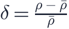
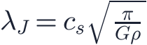
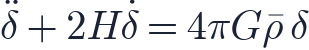
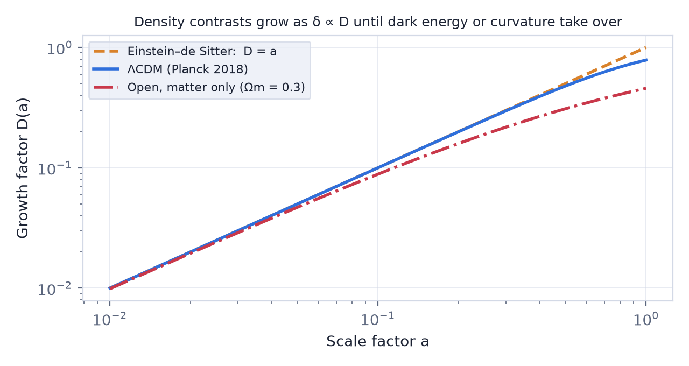
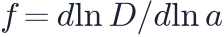
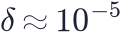
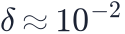

In this lesson you will learn
|
Gravity is unstable
A perfectly smooth universe would stay smooth forever. But if one region is slightly denser than average, it pulls in matter from its surroundings and becomes denser still. Gravity is unstable: small differences grow.
We describe a perturbation by its density contrast

where is the average density. The CMB shows that at recombination was only about in ordinary matter. Today galaxies have . This lesson explains how the first part of that journey works.
The Jeans criterion
Gravity is not the only force. Pressure resists compression. In 1902 James Jeans compared the two for a static gas cloud.
- The time for gravity to collapse a region of density is (the free-fall time).
- The time for pressure to respond across a size is the sound-crossing time .
If sound crosses the region faster than gravity can collapse it, pressure wins and the perturbation just oscillates. If not, gravity wins. The dividing line is the Jeans length:

The mass inside a sphere of this size is the Jeans mass . Regions heavier than collapse; lighter ones oscillate like sound waves.
The Jeans mass before and after recombination Before recombination, baryons were locked to photons, and the sound speed was about half the speed of light. The Jeans mass of the baryons was around –, larger than the richest galaxy clusters. Ordinary matter could not collapse at all; it oscillated, producing the acoustic peaks of lesson L5.1. After recombination, neutral gas at 3 000 K had a sound speed of only about
6 km/s. The Jeans mass dropped by a factor of about , to roughly
|
Growth in an expanding universe
In a static cloud, an unstable perturbation grows exponentially, as . In the expanding universe the background itself thins out while the perturbation tries to grow. For pressureless matter on scales much larger than the Jeans length, linear theory gives

The right-hand side is gravity amplifying the perturbation. The term acts like friction, called Hubble drag: expansion pulls matter apart and slows the growth.
Growth follows the scale factor In a matter-dominated universe the growing solution is Perturbations grow only as fast as the universe expands: a factor of 1 000 between recombination and today, not exponentially. |
The linear growth factor describes this for any cosmology, with .

- Radiation era: expansion is so fast that matter perturbations barely grow, only as . This stalling is called the Mészáros effect.
- Matter era: .
- Dark energy era: expansion accelerates, Hubble drag wins and growth slowly freezes. In our universe perturbations today are about 22% smaller than they would be in a matter-only universe.
The growth rate Cosmologists also measure the growth rate  . A very good approximation is . Galaxy surveys measure from the way galaxies fall into overdense regions (redshift-space distortions), which tests general relativity on cosmic scales. |
Why dark matter is essential
Suppose the universe contained only ordinary matter.
- At recombination the baryon fluctuations were

. - In our universe matter perturbations grew by a factor of roughly 900 from then until today.
- That gives

today: still almost perfectly smooth. No galaxies, no stars, no us.
Dark matter got a head start Dark matter does not interact with photons, so it had no pressure and its perturbations could grow from matter–radiation equality (), long before recombination. When the baryons were released, they fell into the dark matter potential wells that were already much deeper. This is one of the strongest arguments for dark matter (lesson L3.2). |
When linear theory breaks down
The linear equations assume . When approaches 1, a region stops expanding, turns around and collapses into a gravitationally bound dark matter halo. Following this non-linear stage requires the spherical collapse model and computer simulations, the subject of lesson L5.5.
Try it: 2D N-body Structure Formation Press Play and compare the simulation's density contrast with the linear-theory line. Note when they start to differ. |
Remember this
|